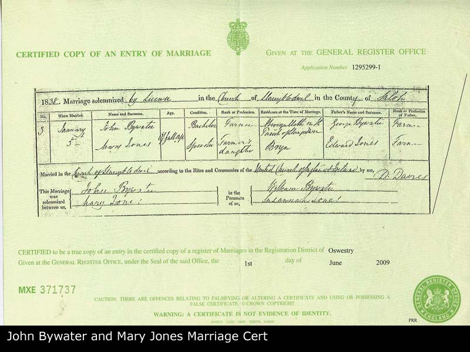
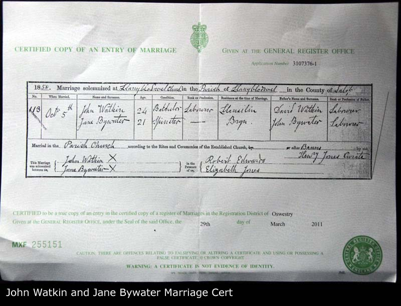

| Husband | John BYWATER b. Before 1821 | |
| Wife | Mary JONES b. Before 1821 d. Between 1839 and 07/1839 | |
| Child | Jane BYWATER b. 29/04/1838 d. After 1901 | |
| Change Date | Date | 21/04/2011 |
| Time | 01:10 | |
John BYWATER1, 2nd child of George BYWATER and Jane EVANS, was born before 1821. Mary JONES2, only child of Edward JONES and Mary, was born before 1821. She died between 1839 and 07/1839 aged about 18. On 05/01/1838 John married Mary. One daughter given. |  |
| i | Jane BYWATER3 was born on 29/04/1838 in Llanyblodwel, Shropshire, England. She died after 1901 aged about 63. She was christened on 29/04/1838 in Llanyblodwel, Shropshire, England. On 29/04/1838 Jane was baptized4 in Bryn Hall, Bryn Llanyblodwell, Shropshire, England. She resided on 06/06/1841 in Bryn Hall, Bryn Llanyblodwell, Shropshire, England. Jane resided on 30/03/1851 in Bryn Hall, Bryn Llanyblodwell, Shropshire, England. Jane resided on 07/04/1861 in Bryn Hall, Bryn Llanyblodwell, Shropshire, England. In 1871 she resided in Olde Bryn Cottage, Bryn, Llanyblodwell, Shropshire, England. In 1881 Jane resided in Olde Bryn Cottage, Bryn, Llanyblodwell, Shropshire, England. In 1901 she resided in Tanat Cottage, Llanyblodwel, Shropshire, England. |  |
1. After marrying Mary Jones In Llanyblodwel in 1838 and listed as a farmer and coming from Abercynlleth, parish of Llangedwin. Like his father, the profession of farmer, rather than labourer may suggest some wealth in the family, further backed up by his marriage to Mary Jones daughter of the Jones also listed as farmers. In 1838 he has his daughter Jane with Mary, but Mary dies in 1839. By 1841 John appears to no longer be present and no record is seen of him after this as yet; [Note Record]
2. Mary daughter of farmer Edward Jones, presumably with some wealth, marries John Bywater in 1838, has daughter Jane, but then dies young in 1839 leaving her daughter Jane to be raised by her parents Edward and Mary at Bryn Hall, Llanyblodwel; [Note Record]
3. Jane's mother, Mary dies when Jane is c. 1 year old and no trace of her father exists after this. She is Christened on April 29 1838 and is raised by her grand parents at Bryn Hall, Llanyblodwel (IGI) She lives at Bryn Hall with the Jones through 1841, 1851 and 1861 census although by 1858 she has married John Watkin who has also moved in to Bryn Hall. Oddly the Jones list her as a niece and daughter on 2 of the census forms but we are convinced she is the daughter of Mary junior. By 1851 her paternal grandmother, Jane Bywater nee Evans is living nearby. In 1859 she has her first child Edward at Bryn Hall but by 1861 Jane and John have moved to Old Bryn Cottage where they raise the rest of their family and live past 1881. Looks like she could not read or write as she signed Roberts birth cert with an X. By 1901, as widow she has moved to live with son George and grandson Frank at Tanat Cottage, and works as a charwoman.; [Note Record]
4. Christened at Llanyblodwel. according to IGI records